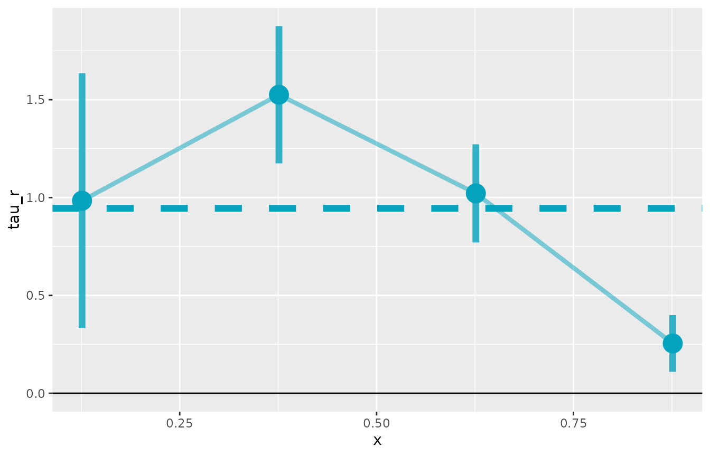

This R package implements the estimator proposed in Identifying Causal Effects in Information Provision Experiments.
The package handles the multi-step estimation process, including bootstrap inference. It also provides a simple wrapper to visualize the CAPE curve, like in the paper. There are lots of options to customize estimation (and you should experiment with them), but the package also provides sensible defaults to get you started quickly.
A Simple Example with Simulated Data
The lls package comes with a simulated dataset
info.sim to highlight how the syntax works and to make some
example plots.
# Load the package
library(lls)
#> Warning: replacing previous import 'collapse::fdroplevels' by
#> 'data.table::fdroplevels' when loading 'lls'
#> Warning: replacing previous import 'collapse::fdim' by 'fixest::fdim' when
#> loading 'lls'
library(data.table)
# Load packaged simulated data
data(info.sim)
setDT(info.sim) # ensure data.table
info.sim[, alpha_est := (posterior - prior) / (signal - prior)]
# Estimate using IV mode
est <- iv.lls(info.sim, y = "Y", x = "posterior", r = "alpha_est",
bandwidth = 0.05, control.fml = "prior",
bootstrap = TRUE, bootstrap.n = 100)
#> Bootstrapping with 100 iterations
# Print summary
print(est)
#> Local Least Squares (LLS) Estimation
#> ====================================
#>
#> Average Partial Effect (APE):
#> Estimate: 0.9454
#> Std. Err: 0.1056
#> t-value: 8.9490
#> p-value: <0.001
#>
#> Normal CI (95%): [ 0.7384, 1.1525]
#> Percentile CI (95%): [ 0.6988, 1.1746]
#>
#> Estimation Details:
#> Bandwidth: 0.0500
#> Bootstrap reps: 100
#> Observations: 500
#> Support points: 500There is a plot function for lls objects. It returns a
ggplot object, so you can customize it further with
standard ggplot2 functions.
plot(est)